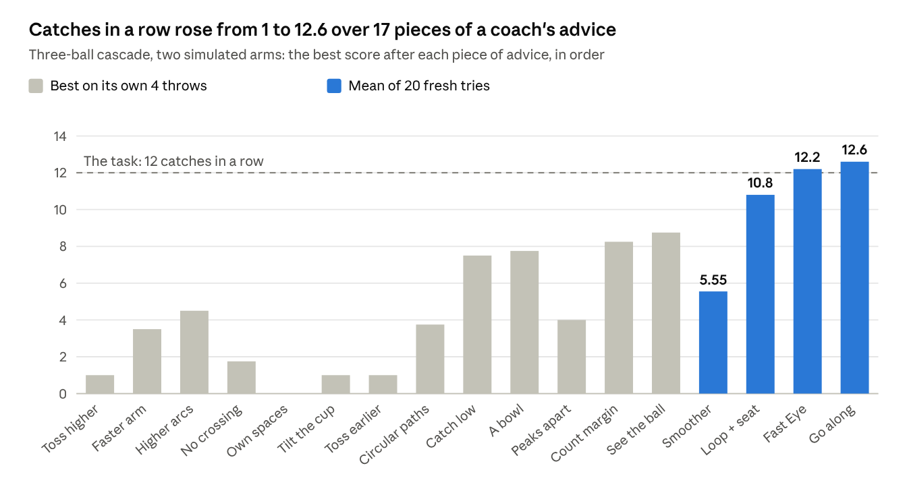
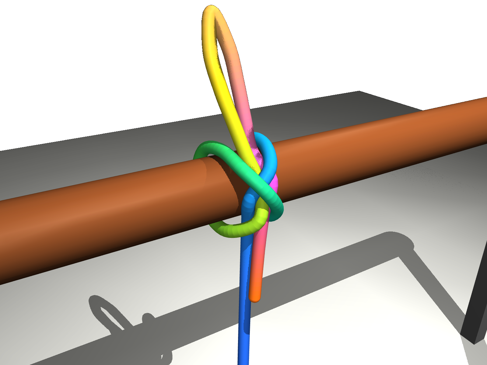

Swarm: many robots, one mind
A mixed team of ground robots and drones guards a warehouse at night. Kith hands out the rounds, notices a robot that goes silent and covers its area, and alerts the people the site names when something is wrong.
Demonstrations
Kith was given a one-sentence instruction: juggle three balls in a cascade, for twelve catches in a row.
The human coach in this test could not juggle. The advice was plain words about how to move, such as “toss higher to gain time” and “catch without a bounce.” Kith turned each tip into a change in the skill, and set aside the tips that did not help. When practice got stuck, it worked out why on its own: its hands spent too long winding up to catch in time. So it changed the motion itself, letting each catch flow straight into the next throw. Its tosses became precise and its catches soft: each ball is met gently, without a bounce.
The point: a person who knows what good looks like can teach Kith a physical skill in plain words, without doing it themselves or writing any code.

Each part works at the speed it is good at, so the slow AI model never holds up the fast moves.
| Part | What it does | How often |
|---|---|---|
| Skill program | Kith generates and stores learned skills as human-readable text, not a neural network | Written once; revised when stuck |
| Fast Eye | A 7-layer CNN finds each ball in two 125-fps cameras: 3.15 ms a picture on a laptop GPU, with a median error of 0.17 pixels. It was trained on pictures the simulator labeled itself. A tracker fits each ball's flight under gravity and predicts where and when it will land | Every 4 ms |
| Kith | Hand commands: position, speed, acceleration | Every 2 ms |
| Skill Tuner | Bayesian optimization, with Gaussian processes and Thompson sampling in a trust region. It learns what physics misses, and measures each miss: how far off, and which way. A skill counts as met only on new tries | Each round of practice |
| Thinker | When practice gets stuck, it works out why, using time and speed budgets. Then it changes the shape of the motion, or asks the coach | 47 times in all |
| Robot controller | Moves the joints, within its own limits and safety | About every 1 ms |
What it remembers, and what carried over. Kith keeps what it learns: the skill itself, the settings tuned for each robot, a model of how each arm really moves, and general lessons, some from the coach and some it worked out on its own. When Kith relearned the skill, it ended ahead, and a second arm learned a new, gentle catch far faster than it could without that knowledge. Kith also knows what a robot cannot do: for one arm, it showed with numbers that the arm could not throw fast enough, instead of practicing in vain.

In a second test, Kith read a four-panel drawing showing how to tie a slipped constrictor knot, and turned it into exact steps. Where it could not tell from the drawing, it asked an expert and kept the answer as a lesson, trusted only after it held up on new pictures.
The picture shows the knot tied in simulation from Kith's steps. The rope was moved by a simulator shortcut, not by robot hands, so this test was about reading, asking and checking.
A mixed team of ground robots and drones guards a warehouse at night. Kith hands out the rounds, notices a robot that goes silent and covers its area, and alerts the people the site names when something is wrong.
A step up from juggling balls with cups: robot hands with fingers learn to toss and catch things that break, such as eggs. Fragile is defined by force: a try fails if any touch presses harder than the object can take, so success shows in the numbers. Kith learns how strong each kind of object is, and treats that as a belief it can be wrong about.
Teach a robot to sort mixed objects into bins, then change the rules, add something fragile, and give advice about handling it.
A mobile robot maps a site, takes stock, notices changes, and goes where it is told in words. Teach it what matters in a place and what to report.
A robot that works among people needs to know them: whose instructions to follow, what each person calls places and things (“the couch in the den”), their preferences and routines, and when to ask before acting. Kith keeps each of these as a belief it can revise from what people say and do, and asks when it is unsure.
We'd love to see what your robots can do with Kith. Bring a robot and a job your customers want done, and let's build something better together.